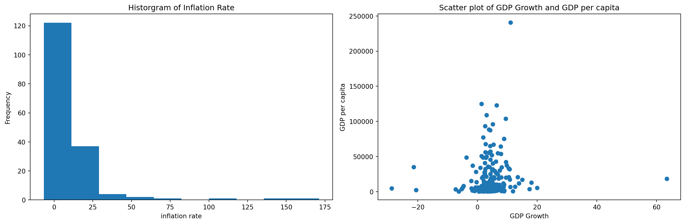

import pandas as pdimport wbgapi as wbimport matplotlib.pyplot as plt# Define the indicators to downloadindicators = {'gdp_per_capita': 'NY.GDP.PCAP.CD','gdp_growth_rate': 'NY.GDP.MKTP.KD.ZG','inflation_rate': 'FP.CPI.TOTL.ZG','unemployment_rate': 'SL.UEM.TOTL.ZS','total_population': 'SP.POP.TOTL','life_expectancy': 'SP.DYN.LE00.IN','adult_literacy_rate': 'SE.ADT.LITR.ZS','income_inequality': 'SI.POV.GINI','health_expenditure_gdp_share': 'SH.XPD.CHEX.GD.ZS','measles_immunisation_rate': 'SH.IMM.MEAS','education_expenditure_gdp_share': 'SE.XPD.TOTL.GD.ZS','primary_school_enrolment_rate': 'SE.PRM.ENRR','exports_gdp_share': 'NE.EXP.GNFS.ZS'}# Get the list of country codes for the "World" regioncountry_codes = wb.region.members('WLD')# Download data for countries only in 2022df = wb.data.DataFrame(indicators.values(), economy=country_codes, time=2022, skipBlanks=True, labels=True).reset_index()# Delete the 'economy' columndf = df.drop(columns=['economy'], errors='ignore')# Create a reversed dictionary mapping indicator codes to names# Rename the columns and convert all names to lowercasedf.rename(columns=lambda x: {v: k for k, v in indicators.items()}.get(x, x).lower(), inplace=True)# Sort 'country' in ascending orderdf = df.sort_values('country', ascending=True)# Reset the index after sortingdf = df.reset_index(drop=True)# Display the number of rows and columnsprint(df.shape)# Display the first few rows of the dataprint(df.head(3))# Save the data to a CSV filedf.to_csv('wdi.csv', index=False)
(217, 14)
country inflation_rate exports_gdp_share gdp_growth_rate \
0 Afghanistan NaN 18.380042 -6.240172
1 Albania 6.725203 37.395422 4.856402
2 Algeria 9.265516 31.446856 3.600000
gdp_per_capita adult_literacy_rate primary_school_enrolment_rate \
0 352.603733 NaN NaN
1 6810.114041 98.5 95.606712
2 5023.252932 NaN 108.343933
education_expenditure_gdp_share measles_immunisation_rate \
0 NaN 68.0
1 2.74931 86.0
2 NaN 79.0
health_expenditure_gdp_share income_inequality unemployment_rate \
0 NaN NaN 14.100
1 NaN NaN 11.588
2 NaN NaN 12.437
life_expectancy total_population
0 62.879 41128771.0
1 76.833 2777689.0
2 77.129 44903225.0
count 202.000000
mean 4.368901
std 6.626811
min -28.758591
25% 2.438593
50% 4.204431
75% 6.200000
max 63.439864
Name: gdp_growth_rate, dtype: float64
count 169.000000
mean 12.493936
std 19.682433
min -6.687321
25% 5.518129
50% 7.967574
75% 11.665567
max 171.205491
Name: inflation_rate, dtype: float64
count 203.000000
mean 20345.707649
std 31308.942225
min 259.025031
25% 2570.563284
50% 7587.588173
75% 25982.630050
max 240862.182448
Name: gdp_per_capita, dtype: float64
Summary
The table above summarizes the key of the statistics of 3 variables: “GDP growth rate”, “Inflation rate”, and “GDP per capita”. The table shows the mean, standard devitation, the min, the median, the upper quartile, the lower quartile and the max.

Figure 1: Histogram and Scatter plot (Source: WDI 2022)
From the graphs of Figure 1, we can see the frequency of inflation rate and the correlation between GDP growth and GDP per capita.
Table 1: My Caption
Variable
Mean
Std
Min
Max
Inflation
12.49
19.68
-6.69
171.21
Growth
4.37
6.63
-28.76
63.44
GDP
20345.7
31308.94
259.03
240862.2
See Table 1 for the summary of the key statistics. As discussed by (Guth 2000) in his paper, the results were significant. This is further supported by (Marattin and Salotti 2011) in his comprehensive guide.
References
Guth, Alan H. 2000. “Inflation and Eternal Inflation.”Physics Reports 333: 555–74.
Marattin, Luigi, and Simone Salotti. 2011. “Productivity and Per Capita GDP Growth: The Role of the Forgotten Factors.”Economic Modelling 28 (3): 1219–25.